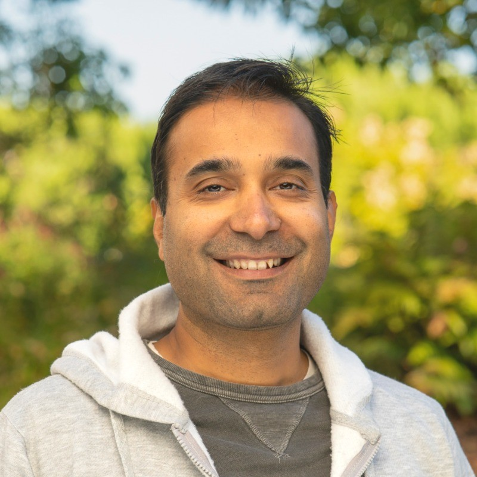

Infrastructure
Capacity planning, network infrastructure, data-center footprints, subsea economics, vendor operations, and the constraints that decide how fast systems can actually be built.

The AI boom is becoming a capital, capacity, and power problem. I connect the physical infrastructure layer to trusted data systems and AI-native workflows so leaders can see constraints earlier and move faster.
Nineteen years operating where code, networks, data centers, vendors, and capital planning meet, most recently shaping how Meta plans, audits, and accelerates the infrastructure underneath AI.
My work sits in the handoff between physical systems and decision systems: fiber routes, data centers, asset inventory, vendor delivery, power constraints, semantic data layers, and AI evaluation loops. I turn fragmented operational reality into trusted models, executive insight, and automation that compresses time-to-capacity.
Capacity planning, network infrastructure, data-center footprints, subsea economics, vendor operations, and the constraints that decide how fast systems can actually be built.
Audit pipelines, telemetry, inventory truth, market models, semantic metadata, and decision surfaces that make messy physical systems legible to operators and executives.
Agentic workflows, AI evals, table design, and automated refresh systems that turn trusted data into repeatable decisions instead of one-off analysis.
Physical systems create messy signals. Data makes them legible. AI makes them actionable.
A live model of the AI infrastructure economy: capex, power, capacity, geography, bottlenecks, and token demand in one decision surface. It refreshes daily from a scheduled agent pipeline.
I built it because AI is increasingly constrained by real-world infrastructure: megawatts, interconnection queues, supply chains, fiber, and capital timing. The monitor shows how I think: combine fragmented public data, infrastructure judgment, and automation into a strategic view people can use.
From network software to telecom strategy to AI infrastructure systems, the throughline has been the same: make complex buildouts measurable enough to act on.
Built network diagnostic tooling for early commercial 4G deployments, where reliability depended on turning protocol-level behavior into usable operator insight.
Modeled telecom markets and modernization programs across spectrum, cell-site decommissioning, and subsea expansion.
Scaled Meta backbone and data-center infrastructure workflows across capacity delivery, vendor operations, inventory recovery, and network planning.
Designed semantic data layers, evals, and agentic workflows that help infrastructure teams use AI against trusted operational data.
Capacity planning, fiber networks, data centers, subsea systems, routing, telemetry, vendor delivery, CapEx and OpEx optimization.
ETL, audit automation, inventory truth, semantic modeling, executive dashboards, market intelligence, and operational data products.
Agentic pipelines, AI eval frameworks, metadata design, coding agents, AI-assisted operations, and automated refresh loops.
Infrastructure partnerships, valuation models, buildout constraints, vendor strategy, executive decision support, and capital planning.
MBA, Strategy & Operations, Purdue University. B.Tech, IT, Kurukshetra University.